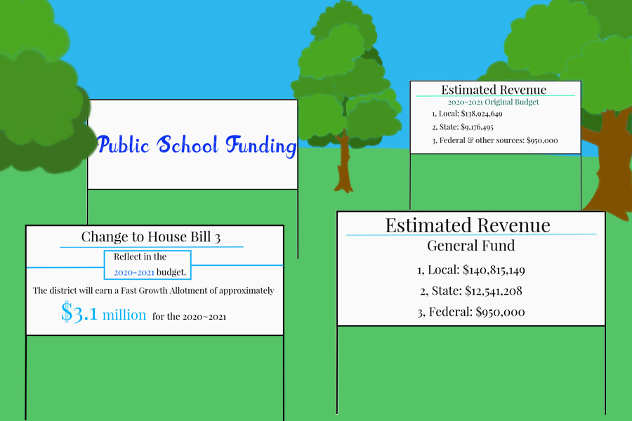

After a series of lawsuits from low-income school districts against the state, a 1993 group of Texas lawmakers passed a new school funding plan, a complex formula that brought in money from higher-income districts and passed it around the state.
Known as recapture, it was meant to distribute access to a good education. Above a certain amount of property tax earnings, property-wealthy districts send money back to the state. Coppell ISD, a “Robin Hood” district (as the plan has been dubbed), regularly sends about a third of property taxes back to the state of Texas.
“It was really designed as a short-term measure to help equalize school funding across the state, with the intent of giving the state legislatures time to come through with an equitable system,” CISD trustee David Caviness said. “Unfortunately, like everything in politics, what was a short term measure is still in play today, and they keep leaning on it. It’s a way for property owners to finance schools across Texas is what it is.”
During the 2019 legislative sessions, the Texas Senate and House of Representatives also passed the monumental House Bill 3, which made sweeping changes to everything from property taxes to how teachers are paid.
For CISD, these changes, and a multitude of COVID-19 expenses, old programs and new circumstances, mean more financial decisions to make for the next school year.
The budget approval process for the Board of Trustees typically starts in spring of the preceding school year with a series of budget workshops. This cycle, however, the board decided to hold its first workshop in November, after it became clear it would need much more time to prepare for what was to come, namely: a $7 million projected deficit in the general budget.
Historically, CISD has usually had projected deficits of around $2 million. However, according to Caviness, the board and various operating departments are conservative in their budget predictions. Because employment is usually never at 100% of what the district allotts, the district never negatively spends. This year, though, it is likely that the district will have to subtract expenditures or add revenue to make up for the large gap.
The primary source of funding for the district is local property taxes. The tax pennies that go to the district (separate from other city entities) are itself split into two portions, which are carefully regulated by state law: the maintenance and operations tax (M&O) and the debt service tax.
The majority of property tax imposed by the district is M&O, which funds the general budget, consisting of expenditure items such as general education and payroll. It is what funds education on a day-to-day basis. The district has some flexibility in setting this rate, but the state poses a minimum M&O tax. Based on property value and average daily attendance, the state also poses a different recapture amount for three different tax levels.
The second tax is the debt service tax rate, which finances interest and principal on bonds. According to state law, bond dollars can only be used to pay for capital projects, such as the construction of new buildings or campus renovations. The bonds are citizen-approved, and the tax rate is more or less dictated by the fluctuation of paying them off. Unlike M&O taxes, the money earned by debt service tax is not subject to recapture.
When the board adopted this deficit last summer, it knew it had extra funds to cover it. It also knew reallocating funds would not be an easy task.
“We did know [that] when the school year started and we passed this budget, [this is] what the situation was. We talked to staff and the board and said, ‘We want to start the budget process earlier,’” CISD Board of Trustees President Nichole Bentley said. “We need to evaluate some things maybe we haven't in a year; maybe there’s some things that have just slowly crept in.”
The district plans out the budget without a clear idea of how much funding or recapture might be. Every two years, when the state legislature meets, it can change the formula, and districts do not have much warning. The school district cannot project funding amounts for even five years.
That is exactly what happened in 2019. With House Bill 3, essential formulas, like the recapture and allotment formulas, were amended. It simplified and decreased tax rates and brought new mandates to the table. CISD earns a greater allotment per student under the bill, but in other areas, the bill has had a negative impact on the district such as removing a distinct Gifted & Talented program allotment but still requiring the district to keep the program funded by the general education allotment instead. It also introduced a number of unfunded mandates—requirements of school districts that are not backed up monetarily, such as full-day pre-K. This is the first full year under House Bill 3.
Bentley explains the state process like this: Once legislators pass a bill, the Texas Education Agency (TEA) steps in to interpret how the law needs to be carried out. HB3 was passed very late in the legislative session; committees did not form until around October. This meant the TEA did not have time to give school districts instructions on how and where to implement budget changes. The CISD board was required to pass the 2019 budget before it had the funding formula.

Coppell ISD gets a majority of funding from local property taxes. In order to combat a $7 million projected deficit, the Board of Trustees needs to decrease expenditures or increase revenue for the 2020-21 school year. Graphic by Ayane Kobayashi.
These funding changes under House Bill 3, coupled with other expenditures, both predicted and from past years, created a gap between projected revenue and projected expenditures. The board budgeted for a large COVID-19 expense, such as for more substitute teachers and personal protective equipment, totalling to around $1.5 million, according to Caviness. Although building Canyon Ranch Elementary and converting Coppell Middle School West into CHS9 two years ago was financed by bonds, staffing and operating is covered under the general budget. The district also incurred a significant expense after it ended its relationship with Dallas County Bus Services three years ago. In addition, the district has not historically cut the budget when it incurs new costs.
“The biggest thing right now is [that] we‘ve got to get our spending in check,” Caviness said. “That means we’re going to have to make some tough decisions. We can increase our revenue some, but the reality is it’s not going to solve our problem on its own; we’re gonna have to look at our expenditures. That’s really what the board has ahead of itself.”
The biggest thing the district can do to increase revenue is to relax open enrollment policies. This is a conversation the district has had already; by opening registration to certain people outside CISD, the board can increase the district’s funding through allotment per student. But, as Caviness notes, it would not be enough to combat the gap in funding.
The board has had a number of conversations about programs in which it can eliminate excess capacity. This would consist of programmatic changes, such as sharing staff across multiple campuses in special education programs. The board is also considering administrative costs, and each department will take a 10% budget cut. Another item on the table is improving efficiency in custodial services.
“We’re basically told, ‘Here’s all of the walls and here’s the few things that you can control,’ and [we are expected to] make a school district operate with [it]."
Nichole Bentley
Students and parents have responded to many of these conversations. On the Jan. 25 budget workshop, the board stated that cutting New Tech @ Coppell and the International Baccalaureate (IB) program at Coppell High School were last on its list after hearing concerns from the community.
“Nothing has been cut yet. No decisions have been made in regards to any programs,” CISD Chief Financial Officer Diana Sircar said. “Discussions were had and there were certain programs mentioned as opportunities, but a lot of that has to do with things we were just exploring. More information will come out in every budget workshop about explaining those things.”
In addition, the board emphasizes that students’ and parents’ concerns are being heard, and it strives to stay committed to providing legally obligated services as well as the high quality of education CISD is used to.
“I’d like to see us take a measured approach and a really thoughtful approach, and it would be really easy to quickly do a bunch of things to get us where we need to be, but I don’t want us to be hasty,” Bentley said. “I want us to evaluate what we’re going to do thoroughly before we do it and make sure there aren’t unintended consequences long term. Immediately, [we are thinking about] what are the things that campuses could do that we haven’t thought of. What are some extras that wouldn’t really change students’ experiences in the classroom? And if we have to do something more drastic, I want us to know how we’re going to serve those students really well if there are big changes we have to make.”
Although another legislative session has begun in Austin, there is not much about funding the district itself can change.
“We’re basically told, ‘Here’s all of the walls and here’s the few things that you can control,’ and [we are expected to] make a school district operate with [it],” Bentley said.
However, the district is in close contact with both Senator Nathan Johnson and State Rep. Julie Johnson, both whom are representing their Coppell constituents in the Texas legislature.
“Anytime there’s new legislation, there’s unintended consequences, even if the legislation has really valid and meaningful purposes. House Bill 3 is not going to go away. One of my hopes in this session would be that they would look at what were some unintended consequences and unintended expenses and modify the funding formula to account for those things that they’ve asked us to do,” Bentley said. “My other hope is that anything that applies to school finance would get decided early in this session, so that there’s time for us to go into the end of our budget process knowing what the formula is going to be rather than having a whole school year where the formula’s evolving and we’re having to adjust as best as can.”
Coppell residents can also contact Sen. Johnson and Rep. Johnson at their offices to voice their concerns for school finance for this legislative session. It is important to note that the $7 million projected deficit is just that—a projected deficit.
“[The deficit] doesn’t mean we are obviously in the red. A misconception is that we’ve been in the red in our spending and really we’re not. Deficit and debt are two different things,” Caviness said.
The district also has a history of committing to a high level of financial transparency, as evidenced by perfect FIRST ratings in past years.
“I don’t want anybody to think there has been poor management of our district finances. It’s unfortunately a convergence of a lot of bad factors, all at once, that we’re kind of having to address and mitigate,” Bentley said. “The big thing is, please be patient. There’s a lot of things out of our control on the budget, and we want to give every penny we can to the classroom and to our students and to the level of excellence that we all enjoy here in Coppell, and it’s tricky to do that with the limitations that the state’s placed upon us.”